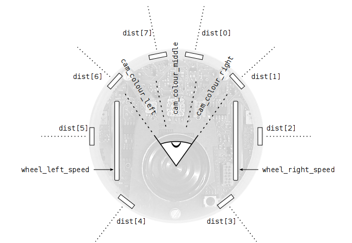

This page teaches you how to get started with Aseba if you do not have any physical robot. If you have a Thymio II, there exists a specific page.
Aseba challenge (right image) is a simulated world where Aseba-controlled robots compete for food. You can use it as a playground to explore writing Aseba scripts or as an educational game to learn and teach programming.
To get started, you have to launch Aseba challenge. If Aseba is not yet installed, please follow the installation instructions. Once challenge is started, you have to click on “Add a new robot”, and to choose a name for it.
If you are a group, you have to add one robot for each player. You can remove all the robots by clicking “Remove all robots”. You can hide the buttons by checking “Auto hide”: the buttons will only show up when the mouse pointer is around them.
You can have the camera move automatically by checking “Auto camera”. If you are moving the camera manually, the controls are the following:
Challenge shows the score of each robot on translucid boards hanging over the arena. The goal is to stay alive by collecting energy.
As long as a robot is alive, its points increase; when it dies, they are halved. Four blue sources provide energy to nearby robots. When a source is depleted, it becomes red and does not provide energy any more. From time to time, a source will sink into the ground and robots will no longer see it until it reappears.
Once Aseba challenge is running, you have to start Aseba studio to program your robot. For each robot, you have to run one instance of studio, which can run on any computer. At startup, studio proposes you to connect to an Aseba target (right image). If you have launched challenge on your computer and added a robot, the default option will connect to this robot. If challenge is running on another computer, or if there are several robots in the arena, please specify the computer in host and the robot in port. The translucent screen over the arena in challenge shows the ports corresponding to the different robots

Once studio is running (right image), you can edit the robot's program in the centre area. The latter is a program editor which checks and compiles your program in real time, telling you whether the program's syntax is correct or not. You can learn more about studio in the menu Help->Studio. The menu Help->Language provides a detailed documentation of the Aseba programming language.
To program a robot, you first have to understand how it works. A robot interacts with the world in a loop: it perceives the state of the world through its sensors, takes some decisions with its onboard computer, and performs actions with its actuators; these actions change the state of the world, and the robot perceives this new state when it reads its sensors again.
In challenge, you program a simulated e-puck robot. This robot has 8 proximity sensors around its body and a simple camera of 3 pixels pointing forward, with an aperture angle of 20° per pixel. You can read these values and also choose the speed of the wheels:

Now, let us write your first robot controller. In the text editor in the middle of the studio window, write the following lines:
wheel_left_speed = 5
wheel_right_speed = -5
To interact with the world continuously, the robot must execute a script periodically. This is achieved with the onevent timer keywords. For instance, using a front proximity sensor, we can set the speed of the wheels with respect to the distance to the object in front of the robot:
onevent timer
wheel_left_speed = dist[0] - 6
wheel_right_speed = dist[0] - 6
Keeping a safe distance to an object in front is good, but right now the robot cannot move elsewhere. To have the robot wander around, we need to understand how it moves.
The simulated e-puck robot in challenge is an example of a differential wheeled robot; this type of robot changes its direction by setting different speeds for its right and left wheels. If each wheel has the same speed, the robot goes forward; otherwise it turns; if the speeds are in opposite directions, the robot turns on the spot. Industrial caterpillar vehicles use the same movement modality.
Let us write a small code that makes the robot avoid obstacles and go straight ahead otherwise:
onevent timer
wheel_left_speed = dist[1] - 6
wheel_right_speed = dist[6] - 6
The controllers we have seen so far link the values of the sensors to the speed of the wheels through mathematical expressions, but do not make “if, then” choices. Yet this is sometimes desirable; for instance if we want the robot either to go straight or to turn on the spot, but not perform curved trajectories, we can write:
onevent timer
var dists = dist[6] + dist[7] + dist[0] + dist[1]
if dists < 48 then
wheel_left_speed = 5
wheel_right_speed = -5
else
wheel_left_speed = 5
wheel_right_speed = 5
end
Play for a while with obstacle avoidance in order to get a good understanding of the sensors, actuators and dynamics of the robot. Feel free to explore, the robot is in a simulator and does not risk being harmed.
Once you feel confident, try to make the robot direct itself to the food sources when they are blue (0, 0, 100) (in R, G, B), and avoid them when they are red (100, 0, 0). The colour of the background is gray (50, 50, 50). Try to play with your friends and to get the best robot controller. You can change the colour of your robot (by changing variables color_red, color_green and color_blue), and thus pretend to be a food source. If the others trick your robot like this, check the energy variable; if it is not increasing while seeing blue, you are being tricked.
The goal of challenge is to learn robotics, programming, and Aseba while having fun.
You might be interested to read:
{kind=link}
{kind=link}